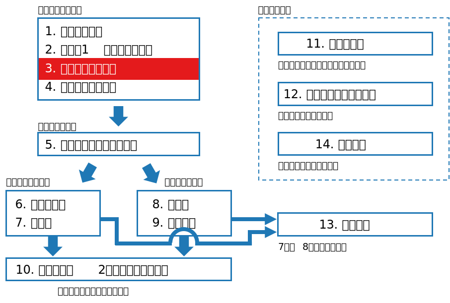
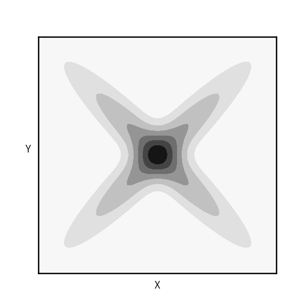

class: middle, center # 数理統計学特論I<br>第3回 多次元の確率変数 奥 牧人 (和漢研) 2022/??/?? --- # 前回の復習 前回の目的 * 確率に関する基本用語や主な1次元分布の意味を数式で理解すること 前回の達成目標 * 期待値と分散の式を書ける。 * 母関数と特性関数の意味を説明できる。 * 2項分布と正規分布の式を書ける。 * 主な1次元分布の式の意味を説明できる。 --- # 今回の位置付け  --- # 今回の目的と達成目標 目的 * 多次元の確率変数に関する基本用語の意味を数式で理解すること 達成目標 * 周辺確率の式を書ける。 * 独立性の定義の式を書ける。 * ヤコビアンの意味を説明できる。 * 共分散と相関係数の式の意味を説明できる。 * 多次元正規分布の式の意味を説明できる。 --- # 予習用キーワードの確認 * 偏微分 * 行列式 * 多次元正規分布 --- # Outline 1. 確率ベクトルの同時分布 2. 変数の変換とヤコビアン 3. 多次元分布の期待値 4. 主な多次元分布 --- # Outline 1. **確率ベクトルの同時分布** 2. 変数の変換とヤコビアン 3. 多次元分布の期待値 4. 主な多次元分布 --- # 離散変数の場合 * 同時確率質量関数 $$p(x,y)=P(X=x,Y=y)$$ * 累積分布関数 $$F(x,y)=P(X\leq x,Y\leq y)$$ * 周辺確率質量関数 $$p(x)=\sum_y p(x,y)$$ --- # 周辺と呼ぶ理由 * 表の周辺部に行ごと、列ごとの和を書くことがあるから <table class="table text-center"> <tr><th></th><th>$x_1$</th><th>$x_2$</th><th>$x_3$</th><th>$x_4$</th><th>計</th></tr> <tr><th>$y_1$</th><td>1</td><td>2</td><td>3</td><td>4</td><td class="mg">10</td></tr> <tr><th>$y_2$</th><td>5</td><td>6</td><td>7</td><td>8</td><td class="mg">26</td></tr> <tr><th>$y_3$</th><td>9</td><td>10</td><td>11</td><td>12</td><td class="mg">42</td></tr> <tr><th>計</th><td class="mg">15</td><td class="mg">18</td><td class="mg">21</td><td class="mg">24</td><td class="mg">78</td></tr> </table> --- # 連続変数の場合 * 同時確率密度関数 $$p(x,y)=\lim_{\Delta x,\Delta y\to 0}\frac{P(X\in [x,x+\Delta x], Y\in [y,y+\Delta y])}{\Delta x\Delta y}$$ * 累積分布関数 $$F(x,y)=P(X\leq x,Y\leq y)$$ * 周辺確率密度関数 $$p(x)=\int p(x,y)dy$$ --- # 確率密度関数と累積分布関数の関係 * 1次元の場合 $$p(x) = \frac{dF(x)}{dx}$$ * 2次元の場合 $$p(x,y) = \frac{\partial^2 F(x,y)}{\partial x\partial y}$$ * $n$ 次元の場合 $$p(x_1,\ldots,x_n) = \frac{\partial^n F(x_1,\ldots,x_n)}{\partial x_1\cdots\partial x_n}$$ --- # 条件付き確率と独立性 * 条件付き確率 ($p(x)\neq 0$ とする) $$p(y|x)=\frac{p(x,y)}{p(x)}$$ これを書き直すと $$p(x,y)=p(y|x)p(x)$$ * 独立性 $$X\perp\\!\\!\\!\perp Y \quad\Leftrightarrow\quad p(x,y)=p(x)p(y)$$ --- # Outline 1. 確率ベクトルの同時分布 2. **変数の変換とヤコビアン** 3. 多次元分布の期待値 4. 主な多次元分布 --- # ヤコビ行列とヤコビアン * $n$ 次元のベクトル $x=(x_1,\ldots,x_n)$ から $m$ 次元のベクトル $y=(y_1,\ldots,y_m)$ への変換を考える。 $$\begin{align}y&=f(x),\quad f: \mathbb{R}^n \to \mathbb{R}^m\\\\y_i &= f_i(x_1,\ldots,x_n)\end{align}$$ * ヤコビ行列 $$J=J(\partial y/\partial x)=\left(\begin{array}{ccc}\frac{\partial f_1}{\partial x_1}&\cdots&\frac{\partial f_1}{\partial x_n}\\\\\vdots&\ddots&\vdots\\\\\frac{\partial f_m}{\partial x_1}&\cdots&\frac{\partial f_m}{\partial x_n}\end{array}\right)$$ * $n=m$ のとき $J$ の行列式が定義され、ヤコビアンと呼ぶ。 --- # 確率分布の変数変換 * 仮定 * $x$ と $y$ はいずれも $n$ 次元ベクトル * $y=f(x)$ が連続微分可能で1対1 * $x=f^{-1}(y)$ も連続微分可能 * $y$ の確率密度関数 $$\begin{align}p(y) &= p(x)|\det J(\partial x/\partial y)|\\\\&= p(x)|\det J(\partial y/\partial x)|^{-1}\end{align}$$ * $n=1$ で $f$ が単調増加の場合、以下のように書ける $$ p(y)dy = p(x)dx$$ --- # 例 * $X$ と $Y$ が独立で、確率密度関数はそれぞれ $f$, $g$ とする。 * $Z=X+Y$ の分布を知りたい。畳み込みと呼ぶ。 * ダミー変数 $W$ を加えて以下のように変換 $$\left(\begin{array}{c}W\\\\Z\end{array}\right)=\left(\begin{array}{cc}1&0\\\\1&1\end{array}\right)\left(\begin{array}{c}X\\\\Y\end{array}\right),\quad\left(\begin{array}{c}X\\\\Y\end{array}\right)=\left(\begin{array}{cc}1&0\\\\-1&1\end{array}\right)\left(\begin{array}{c}W\\\\Z\end{array}\right)$$ * ヤコビアンは $1$ なので、変換後の確率密度関数は $$p(w,z)=f(x)g(y)\times 1=f(w)g(z-w)$$ * ダミー変数を周辺化で消すと $$p(z) = \int_{-\infty}^{\infty}f(w)g(z-w)dw$$ --- # Outline 1. 確率ベクトルの同時分布 2. 変数の変換とヤコビアン 3. **多次元分布の期待値** 4. 主な多次元分布 --- # 多次元分布の期待値 * 離散変数の場合 $$E[f(X,Y)]=\sum_{x,y}f(x,y)p(x,y)$$ * 連続変数の場合 $$E[f(X,Y)]=\iint f(x,y)p(x,y)dxdy$$ * $n$ 次元の場合も同様 --- # 共分散と相関係数 * 共分散 ($X$, $Y$ の平均を $\mu_X$, $\mu_Y$ とする) $$\mathrm{Cov}[X,Y]=E[(X-\mu_X)(Y-\mu_Y)]$$ * 確率変数の和の分散 $$V[X+Y]=V[X]+V[Y]+2\mathrm{Cov}[X,Y]$$ * 相関係数 ($X$, $Y$ の標準偏差を $\sigma_X$, $\sigma_Y$ とする) <div>$$\rho_{XY}=\frac{\mathrm{Cov}[X,Y]}{\sigma_X \sigma_Y}\in[-1,1]$$</div> * $X$ と $Y$ が独立 $\quad\Rightarrow\quad$ $X$ と $Y$ は無相関 ($\rho_{XY}=0$) * 逆は一般に成り立たない --- # 無相関だが独立でない例  --- # 共分散行列 * $X=(X_1,\ldots,X_n)^T$ とする。 * 平均ベクトルを $\mu=E[X]$ とする。 * 共分散行列 (分散共分散行列) $$\begin{align}V[X] &= \Sigma = E[(X-\mu)(X-\mu)^T]\\\\\Sigma_{ij}&=\mathrm{Cov}[X_i,X_j]\end{align}$$ * 対角項は分散、非対角項は共分散 * 線形変換 ($a\in\mathbb{R}^m$, $B\in\mathbb{R}^{m\times n}$ とする) $$V[a+BX]=BV[X]B^T$$ * 共分散行列は半正定値対称行列 (全ての固有値が実数で非負) --- # 多次元分布の特性関数 * $X=(X_1,\ldots,X_n)^T$, $t=(t_1,\ldots,t_n)^T$ とする。 * 特性関数 ($i$ は虚数単位) $$\phi(t)=E[e^{it^TX}]$$ * 畳み込み ($X$ と $Y$ が独立、$Z=X+Y$) $$\phi_Z(t)=\phi_X(t)\phi_Y(t)$$ * 次回話す中心極限定理の証明で使う。 --- # 条件付き期待値 * 条件付き期待値 (連続の場合、離散も同様) $$E[X|Y=y] = \int_{-\infty}^\infty x\,p(x|y)dx$$ * これを $y$ の関数とみなし、$p(y)$ に関して期待値をとると $$E^Y[E[X|Y]]=E[X]$$ * 期待値の繰り返しの公式あるいは全確率の公式と呼ぶ。 --- # Outline 1. 確率ベクトルの同時分布 2. 変数の変換とヤコビアン 3. 多次元分布の期待値 4. **主な多次元分布** --- # 多項分布 * 2項分布を一般化し、起こり得る結果を $k$ 種類にしたもの * 例、サイコロを $n$ 回投げる * 確率質量関数 $$p(x_1,\ldots,x_k)=\frac{n!}{x_1!\cdots x_k!}p_1^{x_1}\cdots p_k^{x_k}$$ * 期待値、分散、共分散 $$\begin{align}E[X_i]&=np_i,\\\\V[X_i]&=np_i(1-p_i)\\\\ \mathrm{Cov}[X_i,X_j]&=-np_ip_j\end{align}$$ --- # 多変量正規分布 * 確率密度関数 $$f(x)=\frac{1}{(2\pi)^{n/2}|\Sigma|^{1/2}}\exp{\left(-\frac{1}{2}(x-\mu)^T\Sigma^{-1}(x-\mu)\right)}$$ * $\mu$ は平均ベクトル、$\Sigma$ は共分散行列 * (参考) 1次元の場合 $$f(x)=\frac{1}{\sqrt{2\pi}\sigma}\exp{\left(-\frac{(x-\mu)^2}{2\sigma^2}\right)}$$ --- # まとめ 多次元の確率変数に関する基本用語の意味を説明しました。 1. 確率ベクトルの同時分布 <span class="times">!</span> 周辺確率の式を書ける? <span class="times">!</span> 独立性の定義の式を書ける? 2. 変数の変換とヤコビアン <span class="times">!</span> ヤコビアンの意味を説明できる? 3. 多次元分布の期待値 <span class="times">!</span> 共分散と相関係数の式の意味を説明できる? 4. 主な多次元分布 <span class="times">!</span> 多次元正規分布の式の意味を説明できる? --- # 小テスト * Moodleで小テストに回答して下さい。 * **期限は今週中** (日曜の23:59まで) とします。 * 繰り返し受験して構いません。最高得点で成績をつけます。 --- # 次回の予習用キーワード * $\chi^2$ 分布 * $t$ 分布 * $F$ 分布